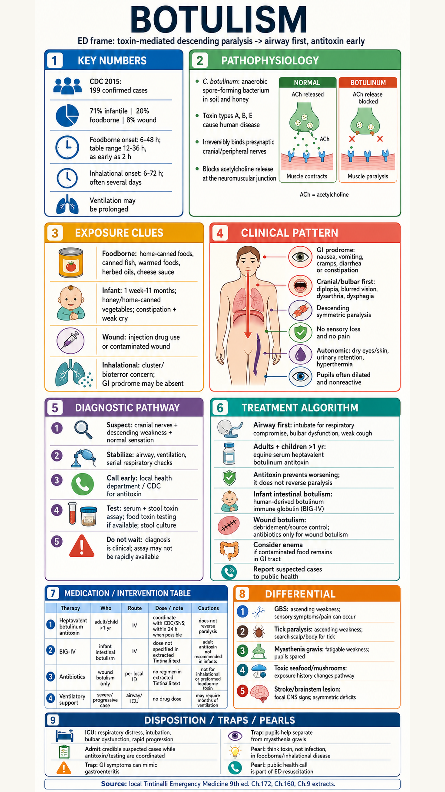

Botulism ED Infographic
Tintinalli-backed visual summary: descending paralysis, airway-first stabilization, antitoxin logistics.

Tintinalli-backed visual summary: descending paralysis, airway-first stabilization, antitoxin logistics.
